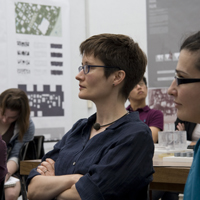

Alumni College San Francisco Bay Area Saturday, November 6, 2010
Dear Alumni and Friends,
As Rice alumni and members of the larger Rice community, we have the extraordinary privilege of inviting you to join alumni, Rice parents, and friends at Alumni College “On the Road,” a daylong celebration of learning in the San Francisco Bay Area.
For those not familiar with Alumni College Weekend, held annually on the Rice campus, our local event will provide an opportunity to attend classes and engage in discussion with academic experts and fellow alumni. Only select regions are invited to host their own Alumni College, and we are pleased to include the Bay Area among them.
Our Saturday event will feature the joy of discovery, the exhilaration of debate, and the pleasure of good company as we hear from outstanding speakers, including Vicki Colvin, Kenneth S. Pitzer-Schlumberger Professor of Chemistry; Dennis Huston, award-winning Rice professor of English; Daniel Rodriguez, fellow in law and urban economics at the James A. Baker III Institute for Public Policy; and Sarah Whiting, Rice dean of architecture. We will conclude our day with a private reception. If you wish to continue your discussions over dinner or enjoy a night on the town, we will be happy to provide information on local restaurants and activities.
A unique experience awaits: uniquely Bay Area, uniquely Rice. Please join us for an event that brings some of the university’s best and brightest to your doorstep!
Sincerely,
Karen Hess Rogers ’68
President
Association of Rice Alumni
Ann Peterson ’86
Executive Director
Alumni Affairs and University Events
Rice dean of architecture Sarah Whiting is generally interested in how cities digest big things. Her forthcoming book, Superblock City, reads Mies van der Rohe’s 100-acre campus for the Illinois Institute of Technology as an urban blueprint. Mies’s IIT has led Whiting to reconsider the much-maligned superblock in more general terms: what challenges does the supersized pose for a city? What opportunities might it offer? Is there a corresponding “superpublic”? And, finally, what, really, is a superblock in the first place?
Sarah Whiting is Rice’s new dean of architecture and the William Ward Watkins Professor of Architecture. Before joining Rice, she was an assistant professor and the Jonathan Dickinson Bicentennial Preceptor at Princeton’s School of Architecture, where she taught urban history and contemporary architectural theory. Whiting has also taught at Harvard University, the University of Kentucky, the Illinois Institute of Technology, and the University of Florida. As a principal of WW Architecture, she is currently working on projects both for the Juilliard School in New York and for the Golden House, a private residence in Princeton, N.J. Her work includes architectural, urban, and writing projects for Rem Koolhaas’s Office for Metropolitan Architecture in Rotterdam, the Netherlands, where she was involved in the master planning of Euralille, a business center in Lille, France, that opened in 1994. Whiting earned her BA at Yale, her MArch at Princeton, and her PhD in the history, theory, and criticism of art, architecture, and urban form from the Massachusetts Institute of Technology.
Nanotechnology-enabled systems offer great promise for solving difficult social problems and, consequently, enormous possibility for commerce. Some of these innovations are related to the fundamental material properties at the heart of any nanotechnology. Their small size, high surface areas, and unique properties render these materials useful to industries ranging from transportation to pharmaceuticals. Recently, nanotechnology has been used to treat cancer, clean water, and increase independence from fossil fuels. Yet there are larger social concerns about whether the new economies for manufacturing would disenfranchise poor people tied to the “non-nano” world. This presentation will offer a healthy dialogue about how these promising developments can help create a more sustainable and socially acceptable industry.
Vicki Colvin is the director of the Center for Biological and Environmental Nanotechnology (CBEN) and the co-director of the Richard E. Smalley Institute for Nanoscale Science and Technology at Rice University. Currently she serves as the Kenneth S. Pitzer-Schlumberger Professor of Chemistry and professor of chemistry and chemical and biomolecular engineering. Colvin studies how nanoscale particles interact with the environment and living systems. Her research draws on both synthetic chemistry for the preparation and control of novel nanophase systems as well as physical chemistry for the investigation of their unusual behavior. Colvin’s projects utilize the unique and responsive behavior of nanoparticles to solve problems related to water purification and targeted cell death. Colvin received her bachelor’s degree in chemistry and physics from Stanford University, and her PhD in chemistry from the University of California, Berkeley.
In 2003, the Massachusetts Supreme Judicial Court kindled a nationwide debate when it ruled in favor of gay and lesbian marriage. Overnight, same-sex marriage became a major national issue. Some of the most important and recent manifestations of this struggle include the ongoing legal matters involving California’s Proposition 8 and a possible ballot box reprise in 2012 or thereafter; the litigation involving the federal Defense of Marriage Act; state court decisions in Massachusetts, Connecticut, Iowa, and elsewhere invalidating same-sex marriage bans; and continuing battles within state legislatures. In addition to disentangling these challenging legal issues, this lecture will offer some perspectives on the political dynamics of this ongoing public controversy at the state and national level.
Daniel B. Rodriguez is the fellow in law and urban economics at Rice’s James A. Baker III Institute for Public Policy and the Minerva House Drysdale Regents Chair in Law at the University of Texas at Austin. He has taught at the University of San Diego School of Law and the Boalt Hall School of Law at the University of California, Berkeley. Rodriguez is an expert in administrative law, local government law, statutory interpretation, and state constitutional law. His work is broadly interdisciplinary, drawing upon political science and economics to illuminate questions of public policy and legal theory. He is a leader in the application of political economy and “positive political theory” to the study of public law, and he has authored or co-authored a series of articles on the subject. Rodriguez is the author of the forthcoming book State Constitutional Law and its Processes. Rodriguez received his bachelor’s degree from California State University, Long Beach, and his juris doctorate from Harvard Law School. He is an elected member of both the American Law Institute and the American Bar Foundation.
San Francisco—with its vivid history, iconic landmarks, and dreamy, menacing fog—has attracted writers of crime and mystery novels since the Gold Rush era. The city and region loom large in this famously thrilling genre of storytelling. Professor Huston will examine detective fiction that originated both in the Bay Area and elsewhere in the U.S., comparing American and English detectives—from authors like Dashiell Hammett and his Sam Spade to Agatha Christie and her Hercule Poirot. How are they similar? How are they different? What makes each compelling to the readers?
J. Dennis Huston has taught English at Rice since 1969, offering courses on a variety of topics, including Shakespeare, drama, detective fiction, and film. His skill, dedication, and classroom magic have resulted in numerous teaching awards. In 1990, the Council for Advancement and Support of Education and the Carnegie Foundation named him National Professor of the Year while Houston Metropolitan listed him among the Ninety Best Things About Houston. The state of Texas named him a Piper Professor in 2002. The Association of Rice Alumni in 2005 bestowed him with the Meritorious Service Award. He is the author of Shakespeare’s Comedies of Play and co-editor of a collection of Renaissance plays. Huston received his BA from Wesleyan University in Connecticut and his MA and PhD from Yale University.
4:45 p.m. — Reception
6:30 p.m. — Reception ends; participants are encouraged to join fellow alumni for dinner on their own
Scholarships
The Leo S. Shamblin Scholarship Fund offers support to select participants with a strong record of volunteer service to Rice or in their local community. Recipients must intend to participate in all of Alumni College San Francisco Bay Area; young alumni and out-of-town participants are especially encouraged to apply. To apply for scholarship funds, please send a letter to the director of alumni affairs explaining why the funds would assist you in attending ACSF and how you satisfy the criteria regarding volunteer service. The deadline for application is October 25. Letters should be addressed to Shamblin Scholarship, Attn: Ann Peterson, Office of Alumni Affairs, Rice University — MS 520, PO Box 1892, Houston, TX 77251-1892.
Hotel Accommodations
Below is a list of recommended nearby hotels, provided for your convenience. For those who may wish to stay farther out, countless options are available in the Bay Area, suited to a variety of tastes and budgets. Explore your options through online travel sites, a local travel agent, or your favorite hotel chain.
Garden Court Hotel
520 Cowper St.
Palo Alto, CA 94301
650-322-9000
The Zen Hotel
4164 El Camino Real
Palo Alto, CA 94306
650-493-4492
Crowne Plaza Palo Alto
4290 El Camino Real
Palo Alto, CA 94306
650-857-0787